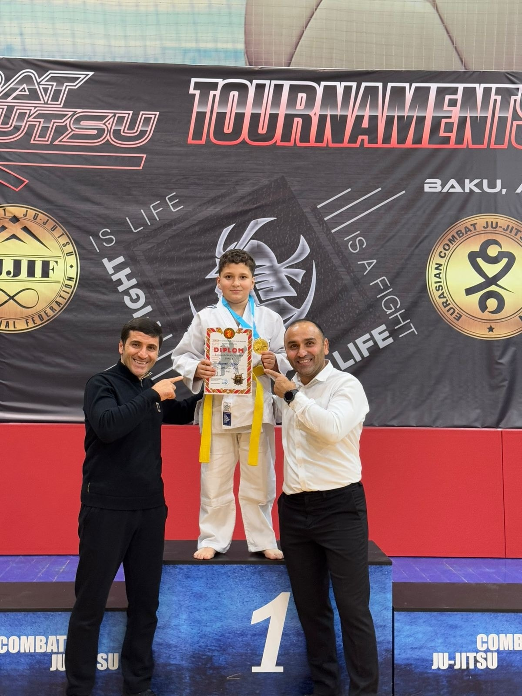

🥇 Şagirdimizin Böyük Uğuru

Quliyev Elcan Rəşad oğlu
Gəncə şəhər N.Nərimanov adına 25 nömrəli tam orta məktəbin
5-ci sinif şagirdidir.
İdman növü: Kombat Ciu-Citsu
- 29 dekabr 2024 – 45 kq (8-9 yaş qrupu) – I yer
- 21 dekabr 2025 – 50 kq (10-11 yaş qrupu) – I yer
- 2025 – “İlin Yekunu” Aikido seminarında iştirak